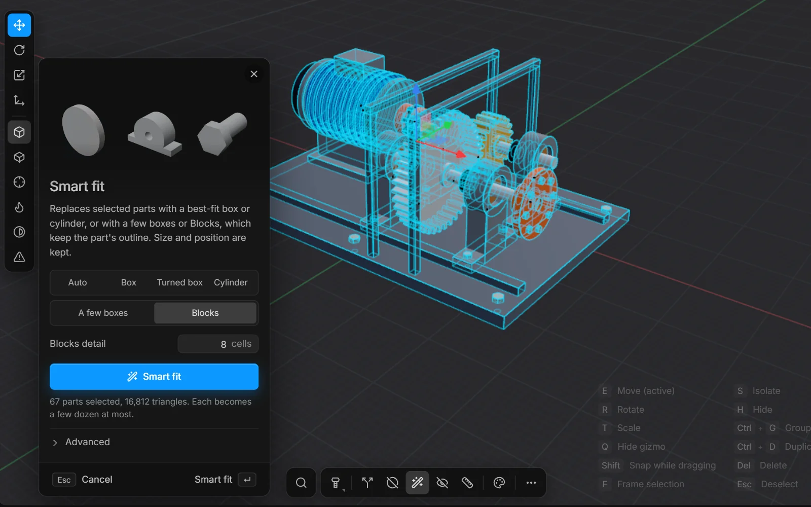
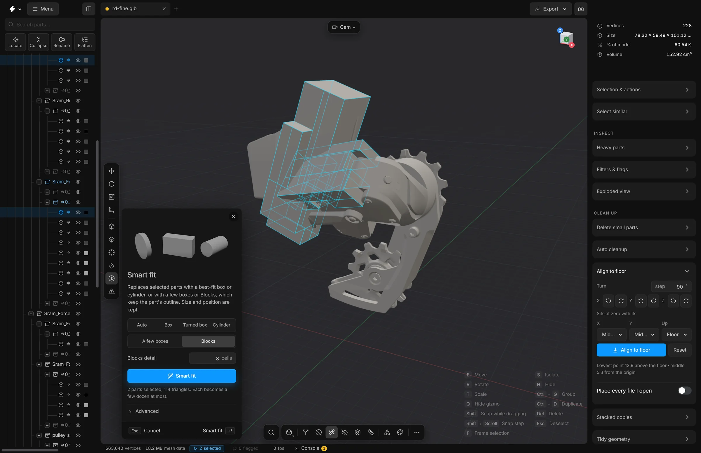

Smart fit
Replace a detailed part with a simple stand-in of the same size and position: a box, a cylinder, a few boxes, or blocks that keep its outline.
Some parts only need to be there. A bolt can carry a great many triangles, and from a distance a plain cylinder looks the same. Smart fit replaces the selected parts with a simple shape of the same size, in the same place.


When to use it
For nuts, bolts, pins and housings: parts that fill a space but whose detail does not matter. Not for parts whose shape people will look at. This is the most drastic of the reducing tools: the part’s own mesh is thrown away.
Steps
- Select the parts to replace.
- Press CtrlB, or click Smart fit on the bottom toolbar. The panel opens.
- Choose a shape, or leave it on Auto.
- Press Smart fit, or Enter.
- Each selected part becomes its stand-in. Its size and position are kept.
The shapes
- Auto
- Picks a box, a turned box or a cylinder for each part, whichever fits it best.
- Box
- A box lined up with the scene’s axes.
- Turned box
- A box turned to follow the part. Better for parts that sit at an angle.
- Cylinder
- A cylinder along the part’s long axis.
- A few boxes
- A handful of boxes, each sized and turned to one piece of the part. A levelling foot becomes a slab and a bar, a frame becomes four bars. Each box is 12 triangles.
- Blocks
- The part rebuilt from a coarse grid of boxes. It looks boxy, but its steps, arms and openings stay where they are.
One box says where a part is and nothing about what it is: a bracket becomes a brick. A few boxes and Blocks keep the outline. Both fall back to a plain box when they would not be clearly lighter than the part.


What the options mean
- At most … boxes
- For A few boxes: the most boxes a part may become. Simple parts use fewer. It starts at 6.
- Blocks detail
- For Blocks: how many cells the part’s longest side is cut into. More cells follow the outline more closely and cost more triangles. An opening narrower than a cell closes. It starts at 8.
- Roundness for a cylinder
- Under Advanced. How round a part must be, looking down its axis, to become a cylinder. 1 is a perfect circle, a hexagon is 0.87, a square 0.71.
- Cylinder to box volume
- A cylinder is chosen only if its volume is at most this share of the best box’s volume.
- Shortest cylinder, length to width
- How many times longer than it is wide a part must be to become a cylinder. 0 lets flat round parts such as gears and washers be cylinders too.
- Find the part's own axes
- Works out which way each part points from its mesh. Off: only the scene’s axes and the axes stored with the part are tried.
Every part at once
The button Smart fit all parts in the card Reduce triangles replaces every part in the scene with a box, a turned box or a cylinder. It removes most of the detail of the model. Use it only when you need the roughest possible stand-in for a whole assembly.
Undo
One run is one undo step: CtrlZ brings the original meshes back.
Good to know
- Only the selected parts change. Another part with the same shape that stands elsewhere is left as it is. Only a copy that lies on the selected part itself, drawn twice in the same place, is fitted along with it.
- If the view is exploded, Smart fit works on the parts at rest and then puts the explosion back as it was.